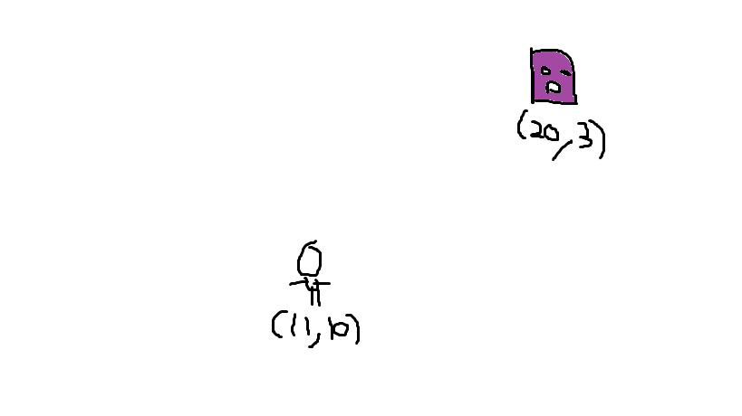
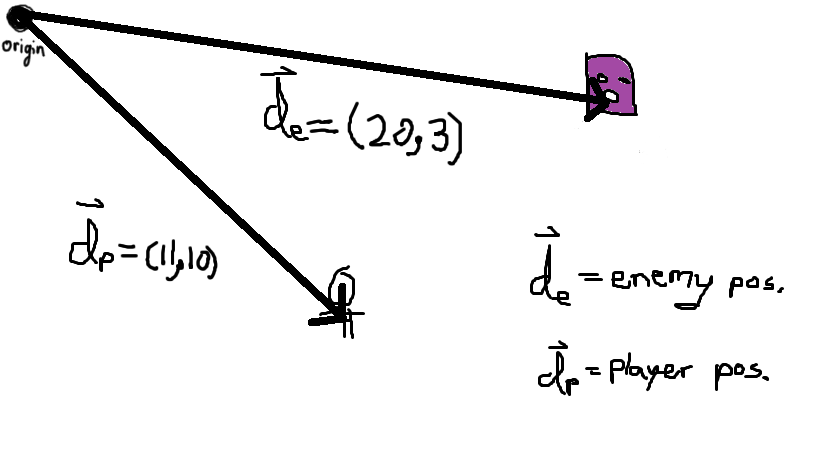
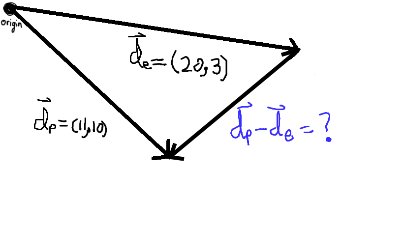
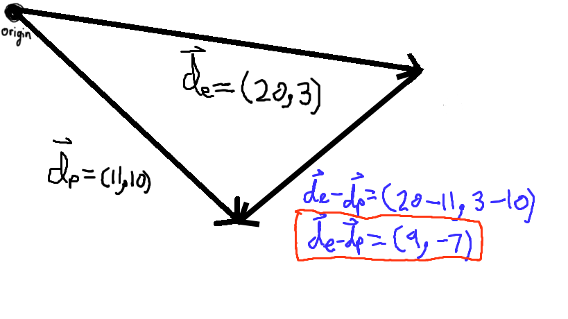
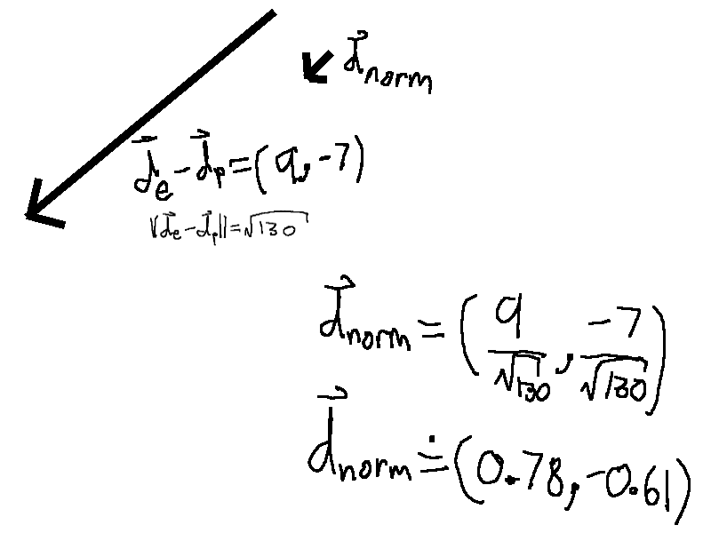
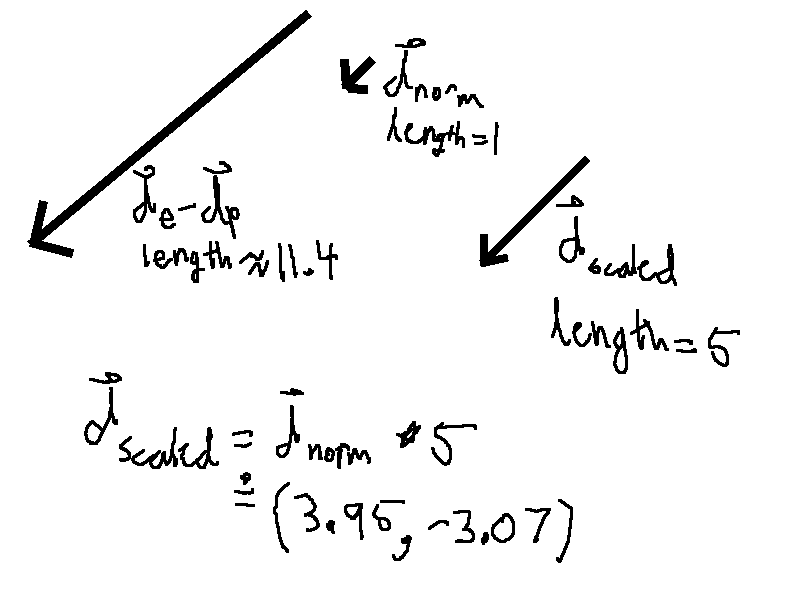

Vectors and games
The most basic problems in game programming are solved using vectors and simple operations like vector addition and vector subtraction.
The problem
A mage shoots a fireball at the player. All fireballs move at a constant rate of 4 (in-game) meters per second. You are given the coordinates, in meters, of the mage and player as shown below. How many meters should the game move the mage’s fireball in the x-direction and the y-direction every second? In other words, what are the components of the velocity of the fireball, in m/s?
Solution
First, recognize that the coordinates are the components of the two entity's position vector from the origin.
In physics class, we typically write vectors as their magnitudes and directions; however, vectors can also be treated as the value of their components. This is much easier for computers to work with. In component notation (shown below), vectors are written as an ordered pair of their x-axis and y-axis components.
We can get a vector that points from the mage toward the enemy using vector subtraction. Graphically, va - vb is a vector that points tip-to-tip toward va (the vector to be subtracted from). A diagram of dp - de is shown below.
Vector subtraction is defined as the component-wise subtraction of the vectors. So finding the components of dp - de is as easy as doing subtracting the x’s and subtracting the y’s, as shown below:
Great! We now have a vector that points in the direction that the fireball needs to go: de - dp = (9, -7). The length (also called magnitude) of this vector, which you can find by using Pythagorean theorem on the vector’s components, is √130 or approximately 11.4 meters. This is the distance between the player and the enemy, which is useful for purposes like detecting when the player is close enough to be seen by an enemy or when the player is close enough to interact with a door or an NPC. For the fireball’s velocity, we really care about the direction of de - dp, since the fireball will be going at a set speed regardless of how far away the player is. So let’s change de - dp in such a way that its direction stays the same but its length is clamped down to 1 meter; let’s normalize de - dp. Normalizing a vector involves dividing each of the vector’s components by the length of the vector.
Lastly, we need to multiply the normalized vector by 5 since the fireball needs to travel a distance of 5 meters in one second. Graphically, vector multiplication keeps the vector’s direction the same but stretches the length of the vector by whatever you multiply the vector by. So multiplying the normalized vector, with length 1, by 5 gives a vector with a length of 1 * 5 = 5. This vector is the displacement that the fireball needs to travel in a second, so the velocity of the fireball is the same as this vector but with units changed from meters to meters per second. Algebraically, vector multiplication by a scalar is found by multiplying each of the vector’s components by that scalar. The result is shown below.
Extension challenge
Instead of aiming at the player’s current position, what if the mage aimed such that it hits the player as it moves at a constant velocity? For a player at the position (10, 5) in meters when the fireball is shot and travelling at a constant velocity of (5, 9) in meters per second, what should the velocity of a fireball which travels at a speed of 5 m/s be?. I will post the solution to this challenge in the next blog post.